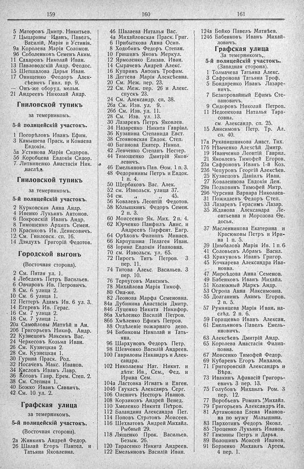

Лист источника 185
Скан

Распознанный текст
159
5 Маторовъ Дмитр. Никитьев.
7 Цыцарины Иванъ, Павелъ,
Василій, Марія и Устинія.
9а Королева Марія Соломон.
9б Соболенковъ Семенъ Аким.
11 Сахаровъ Николай Иван.
13 Павловодскій Андр. Феодос.
15 Шепшалова Дарья Иван.
17 Онищенко Ѳеодоръ Алек-
сѣевичъ Гнил. пр. 9.
— Онъ-же оборуд. мельн.
21 Андреевъ Николай Андр.
Гниловской тупикъ
за темерникомъ.
5-й полицейскій участокъ.
1 Погорѣловъ Иванъ Ефим.
3 Камышева Праск. и Комаева
Евдокія.
5а Устинова Марія Сидоров.
5б Коробцева Евдокія Сидор.
7 Литвиненко Анастасія Ник.
наслѣд.
Гниловской тупикъ
за темерникомъ.
5-й полицейскій участокъ.
2 Курковская Анна Андр.
4 Ивенко Лукьянъ Антонов.
6 Покровскій Иванъ Андр.
8 Тимошенко Архипъ Семен.
10 Красиковъ Ив. Денисовичъ.
12 См. Гниловск. сп. 16.
14 Дзядухъ Григорій Федотов.
Городской выгонъ
(Восточная сторона).
2 См. Пятая ул. 1.
4 Лебедевъ Петръ Васильев.
6 Овчаровъ Ив. Петровичъ.
8 См. 6 улица 2.
10 См. 6 улица 1.
12 Петтеръ Адамъ Ив. 6 ул. 3.
14 Егеревъ Ив. Герас.
16 См. 7 улица 2.
18 См. 7 улица 1.
20а Самойловы Матвѣй и Ан.
20б Григорьевъ Никиф. Андр.
22 Кузнецовъ Максимъ Вас.
24 Черкесовъ Козьма Иван.
26 См. Кузнецкая 2.
28 См. Кузнецкая 1.
30 Гурина Праск. Род.
32 Носачевъ Макс. Иванов.
34 Кисловъ Иванъ Лавр.
36 Котовъ Гавр. Ерем. Степ. 2.
38 См. Степная 1.
40 Божко Иванъ Саввичъ.
42 См. 10 ул. 2.
Графская улица
за темерникомъ.
5-й полицейскій участокъ.
(Восточная сторона).
2а Жинкинъ Андрей Федор.
2б Шалай Егоръ Пантел. и
Татьяна Яковлевна.
160
4б Шалаева Наталья Вас.
4а Михайловская Праск. Григ.
6 Прибыткова Анна Осип.
8 Ходобинъ Федоръ Степан.
10 Гришинъ Яковъ Меркул.
12 Ярмоленко Елизав. Иван.
14 Сырачевъ Андрей Алекс.
16 Купринъ Антонъ Трофим.
18 Дегтева Марія Алексѣевна.
20 См. Меж. пер. 23.
22 См. Меж. пер. 26 и Алекс.
спускъ 23.
24 См. Александр. сп. 38.
26а См. Изв. ул. 9.
26б См. Изв. ул. 11.
28 См. Изв. ул. 13.
30 Лазаревъ Петръ Яковлев.
34 Назаренко Никита Гавріил.
36 Кузанина Степанида Евст.
38 Стояновская Евдок. Степ.
40 Баганова Екатер. Никол.
42 Левченко Степанъ Нестер.
44 Тимошенко Дмитрій Яков-
левичъ.
46 Емельяновъ Пав. Ѳом. 1 п. 3.
48 Федоринины Петръ и Евдок.
1 п. 4.
50 Щербаковъ Вас. Алек.
52 см. Извольск. улица 37.
54 см. „ „ 45.
56 Ковалевъ Леонтій Федотов.
58 Колышкинъ Федоръ Семен.
2 п. 3.
60 Моисеенко Як. Мих. 2 п. 4.
62 Юрченко Панфилъ Анис. и
Андреевъ Парфент. Евгр.
64 Орѣховъ Филиппъ Минаев.
66 Карпушина Пелагея Иван.
68 Іорина Евдокія Ивановна.
70 см. Извольск. ул. 65.
72 Пирогъ Титъ Петров. 3
пер. 11.
74 Титова Алекс. Васильев. 3
пер. 10.
76 Терпуговъ Максимъ.
78 Михайлова Марія Тимоф.
80 Она-же.
82 Леонова Марфа Семеновна.
84а Дубинина Анастасія Дмитр.
84б Луценко Никита Никифор.
86а Хмѣленко Василій Петров.
86б Хмѣленко Ефимъ Петров.
88 Отдѣленіе пожарнаго депо.
94 Бибиковы Николай и Тать-
яна.
96 Шархуновъ Федоръ Петр.
98 Шевченко Василій Андреев.
100 Гавриловы Никандръ и Алек-
сандра.
102 Николаевы Нат. Никит. и
дѣти: Ив., Сем., Фед. и
Ирина Сем.
104а Ластовка Игнатъ и Евген.
104б Гаукасъ Александръ Серг.
106 Оленичъ Несторъ Иванов.
108 Корзиковъ Андрей Венед.
110 Хмеленко Никита Петров.
112 Баландина Александра Пет.
114 Поповъ Стратонъ Моисеев.
116 Шехватовъ Андрей Михайл.
Рыбный 29.
118 Лященко Прок. Васильев.
Безым. 26.
120 Тарасенко Никита Андреев.
122 Емельяновъ Василій Иван.
161
124а Бойко Павелъ Матвѣев.
124б Бабенковъ Иванъ Михай-
ловичъ.
Графская улица
За темерникомъ,
5-й полицейскій участокъ.
(Западная сторона).
1 Толмачева Татьяна Алекс.
3 Сафронова Татьяна Троф.
5 Бондаренко Иванъ Лазаре-
вичъ.
7 Безкоровайный Ефимъ Сте-
пановичъ.
9 Сидоровъ Николай Петров.
11 Недопекова Наталья Тара-
совна.
см. Александр. сп. 25.
15 Анисимовъ Петр. Тр. Ал.
сп. 40.
17а Рукавишникова Анаст. Тих.
17б Нѣмченко Алексѣй Дмитр.
19 Иванченко Леонтій Гаврил.
21 Яковлевъ Тимофей Егоров.
23а Сафроновъ Иванъ 1-й Коз.
23б Чепуровъ Георгій Алексѣев.
25 Кузнецовъ Даніилъ Иван.
27 Коваленнова Евдокія Ден.
29а Подковинъ Тимофей Митр.
29б Чурсина Варвара Николаев-
31 Пожидаевъ Федоръ Степ.
33 Лазаревъ Герасимъ Лазар.
35 Жданова Александра Ле-
онтьевна и Морозова Ѳе-
досья.
37 Масленникова Екатерина и
Красюковы Петръ и Ири-
на 1 п. 5.
39 Цимбалова Марія Ив. 1 п. 6
41 Соловьевъ Абрамъ Васил.
43 Крикуновъ Иванъ Григор.
45 Кочкарева Александра Ива-
новна.
47 Мироѣдова Анна Семенов.
49 Бабенковъ Иванъ Михайл.
51 Колюжный Маркъ Андр.
53 Огропа Анна Максимовна.
55 Долганинъ Акимъ Егоров.
2 п. 5.
57 Румянцева Марія Иван. на-
слѣд. 2 п. 6.
59 Горащенко Иванъ Алексан.
61 Емельяновъ Павелъ Емель-
яновичъ.
63 Алексѣевъ Дмитрій Андр.
65 Королева Анастасія Филип-
повна.
67 Моисенко Тимофей Федор.
69 Кубаревъ Егоръ Михалов.
71 Григоровскій Александръ и
Вѣра.
73 Ивакинъ Афанасій Григорь-
евичъ 3 пер. 13.
75 Голубовъ Михаилъ Ром. 3
пер. 12.
77 Воробьевъ Романъ Михайл.
79 Григорьевъ Александръ Ив.
81 Артамонова Елена Иванов-
на по мужу Малышина.
83 Пархотинъ Федоръ Яковл.
85 Троценко Лукьянъ Иванов.
87 Гамзины Петръ и Дарья.
89 Волошинъ Моисей Иванов.
91 Борзенко Михаилъ Артем.
4 пер. 1.